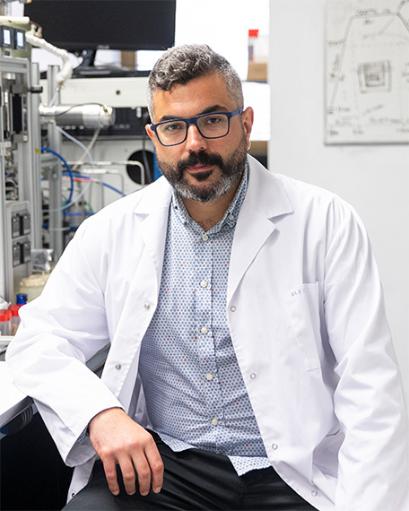
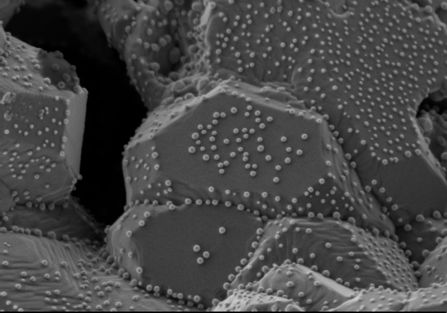
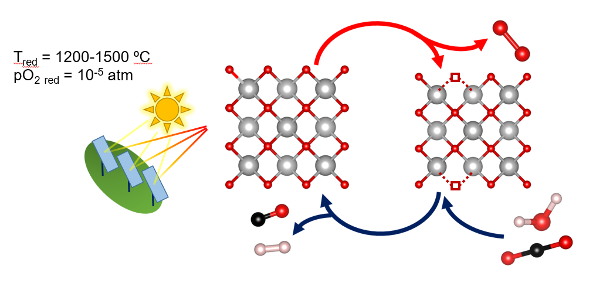
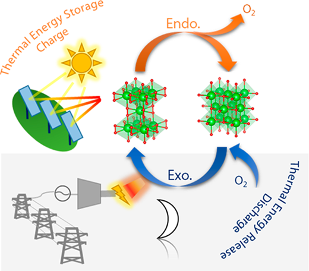
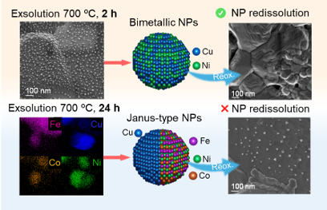
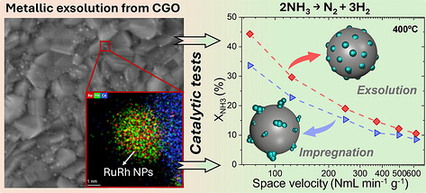
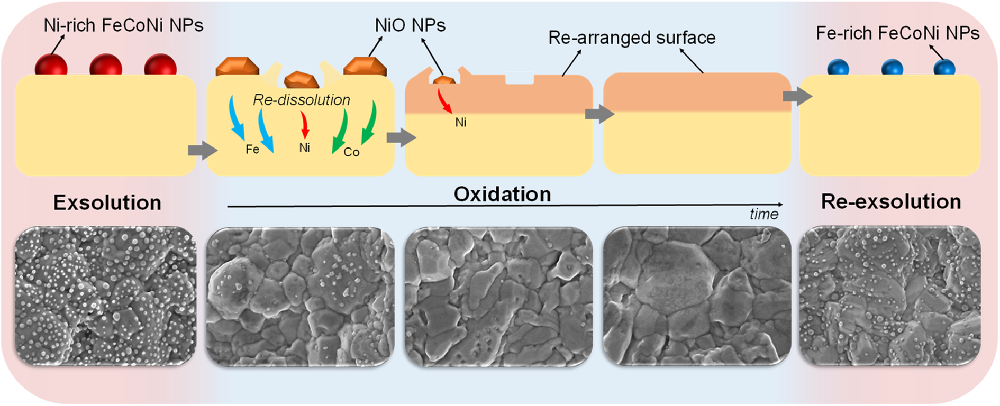
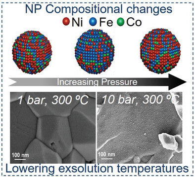
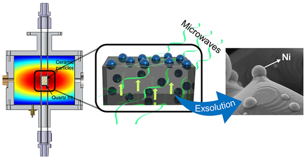

Funding
My research has been supported by:


Developing advanced redox materials and catalytic interfaces for renewable fuel production, energy conversion and thermochemical energy storage. Member of the Energy Conversion and Storage Group at the Institute of Chemical Technology (ITQ) in Valencia, Spain.


Engineering metal–oxide interfaces through controlled nanoparticle exsolution for catalysis and electrochemical energy conversion.

Redox materials and catalytic processes for hydrogen production, CO₂ conversion and solar fuel generation.

Redox-active oxides and reactor concepts for high-temperature thermochemical energy storage.
B. Delgado-Galicia, A. López-García, C.E. Jiménez,
R. Suarez-Anzorena, M. Bär, V. Pérez-Dieste, A. Aguadero,
J.A. Alonso, I. Puente-Orench, L. Almar,
A.J. Carrillo, J.M. Serra
ACS Nano 20 (2026) 14155–14169

A. López-García, E. Barrio-Querol, Á. Represa, J. Ara,
A.B. Hungría, D. Catalán-Martínez,
A.J. Carrillo, S. Escolástico, J.M. Serra
Angewandte Chemie International Edition (2026)

A. López-García, A.J. Carrillo,
C.E. Jiménez, R.S. Anzorena, R. Garcia-Diez,
V. Pérez-Dieste, I.J. Villar-Garcia, A.B. Hungría,
M. Bär, J.M. Serra
Journal of Materials Chemistry A 12 (2024) 22609–22626

A. López-García, S. Remiro-Buenamañana, D. Neagu,
A.J. Carrillo, J.M. Serra
Small (2024), 2403544

A. López-García, A. Domínguez-Saldaña,
A.J. Carrillo, L. Navarrete, M.I. Valls,
B. García-Baños, P.J. Plaza-Gonzalez,
J.M. Catala-Civera, J.M. Serra
ACS Nano 17 (2023) 23955–23964

My research has been supported by:
Institute of Chemical Technology (ITQ)
CSIC – Universitat Politècnica de València
Valencia, Spain